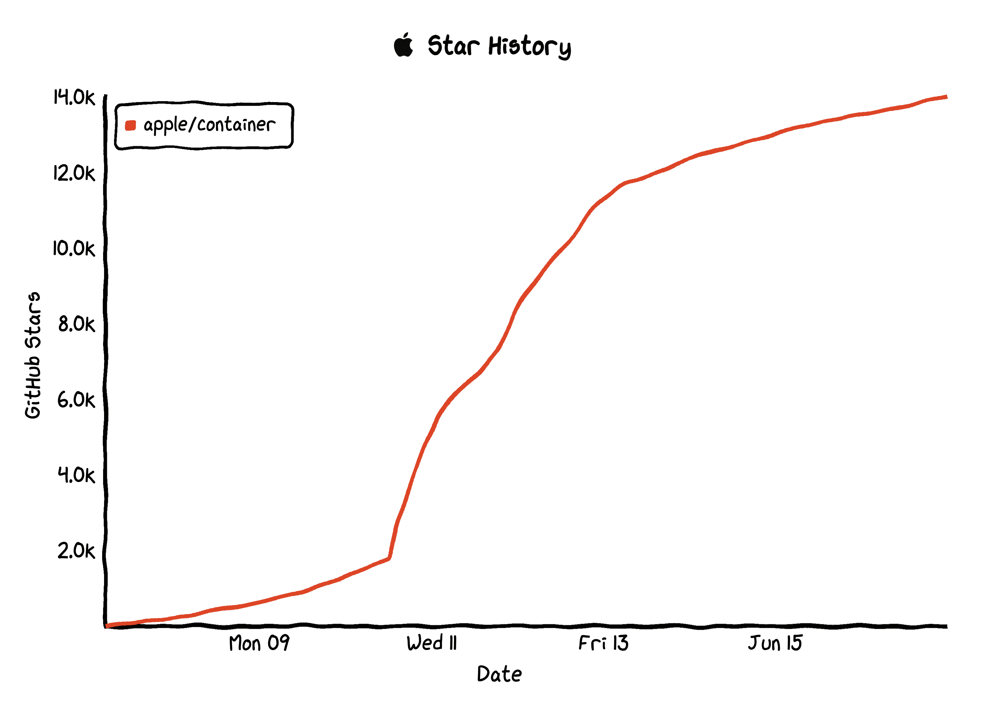
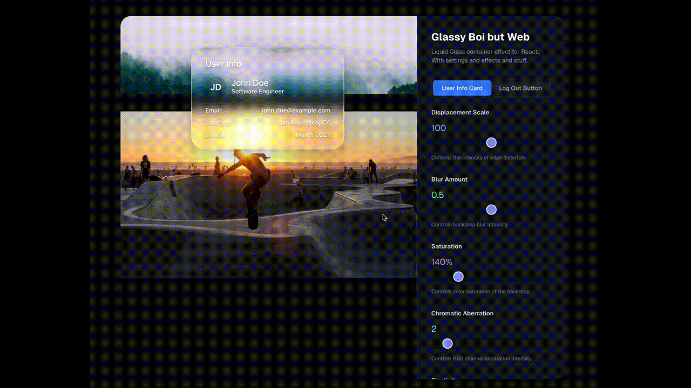
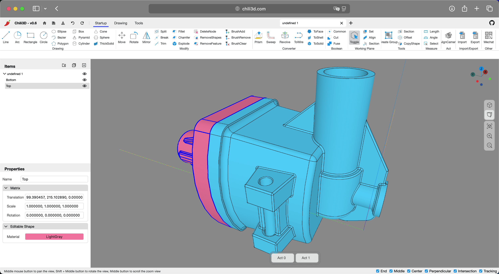
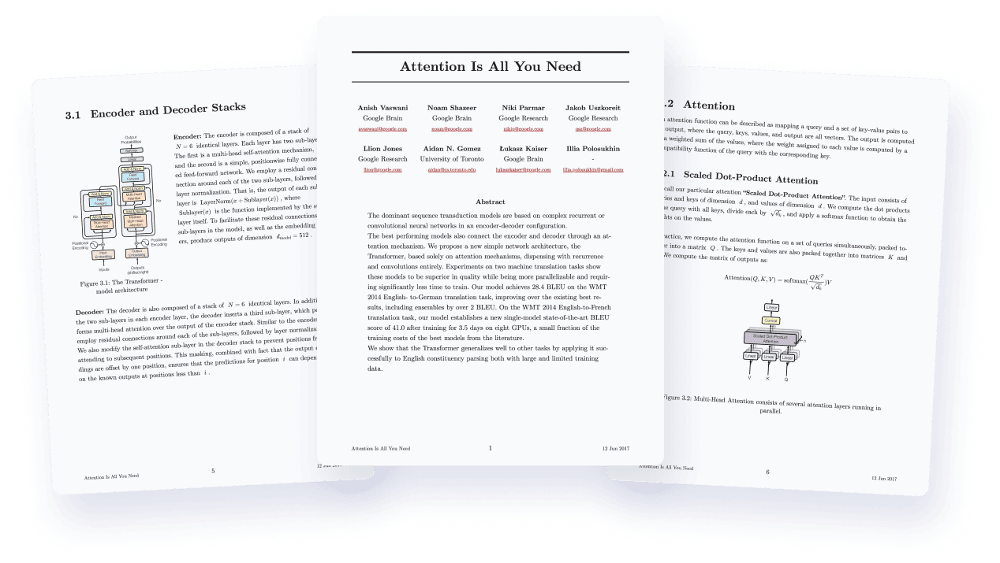
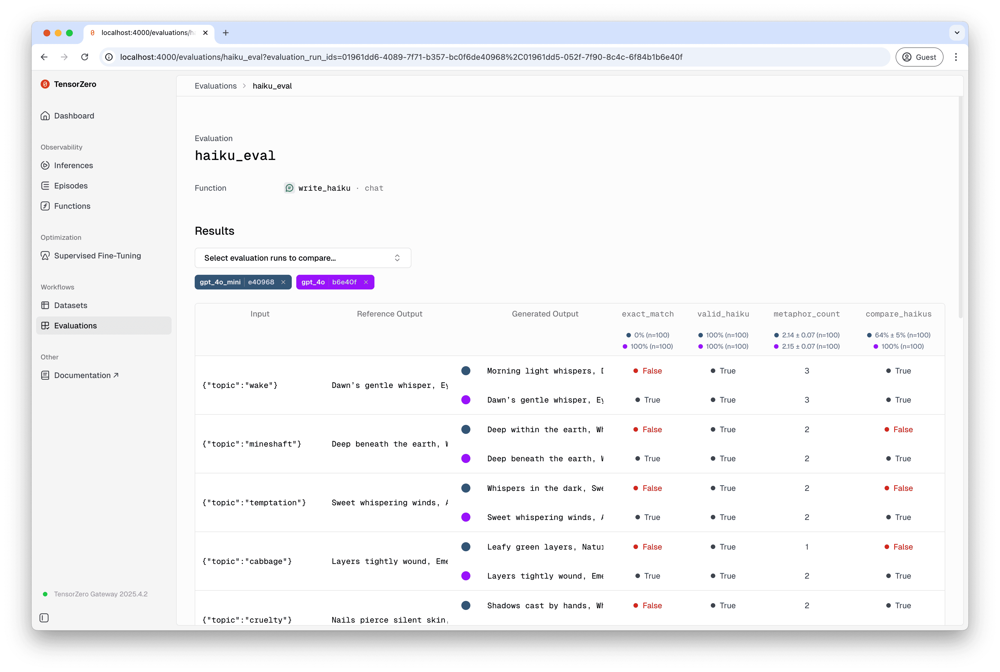
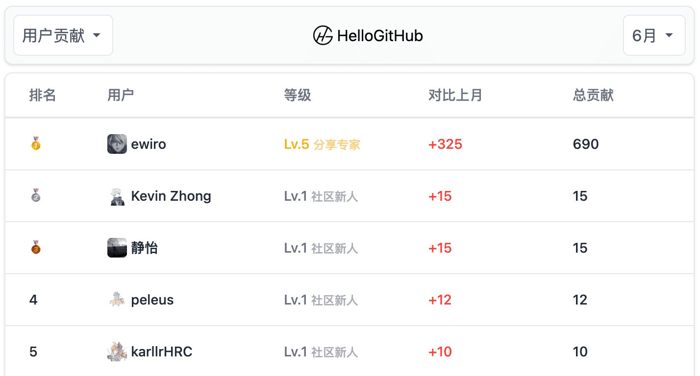
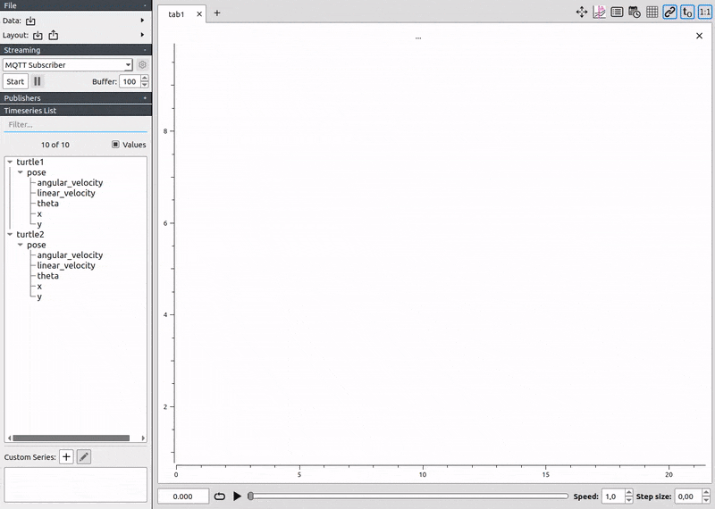
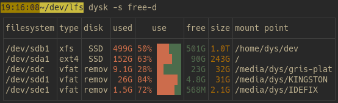

上周的苹果全球开发者大会（WWDC25），万众期待的 AI 加持版 Siri 跳票了，让不少开发者略感失望。然而“东边不亮西边亮”，开源社区迎来了重磅级开源项目 container，一款由苹果开源的轻量级容器工具，可轻松创建和运行 Linux 容器镜像，为 macOS 用户带来原生的容器体验，开源一周便 Star 破万✨！

与此同时，苹果还发布了全新视觉设计语言「Liquid Glass」液态玻璃，开源社区也迅速跟进，实现类似效果的 React 库 liquid-glass-react，在短短一周内斩获 1.7k Star。除此之外，免费的在线 3D 建模平台 Chili3D、更强大的 Markdown 排版系统 Quarkdown 以及一站式 LLM 企业级应用平台 TensorZero，也凭借各自独特的亮点赢得开发者青睐，均成功解锁「周增千星」的成就🏆。
· 本文目录
· 1\. 热门开源项目
· 1.1 实现液态玻璃特效的 React 库：liquid-glass-react
· 1.2 免费的在线 3D 建模平台：Chili3D
· 1.3 苹果开源的轻量级容器工具：container
· 1.4 更强大的 Markdown 排版系统：Quarkdown
· 1.5 一站式 LLM 企业级应用平台：TensorZero
· 2\. HelloGitHub 热评
· 2.1 专业级时间序列数据可视化工具：PlotJuggler
· 2.2 更好用的 df 命令替代工具：dysk
· 3\. 结尾
1. 热门开源项目
1.1 实现液态玻璃特效的 React 库：liquid-glass-react

主语言：TypeScript，Star：1.7k，周增长：1.7k
该项目是实现类似苹果液态玻璃（Liquid Glass）效果的 React 组件，帮助开发者快速实现现代感十足的动态模糊背景。它通过模拟液体的流动、折射和边缘弯曲等效果，模拟真实的液体流动感，为网页元素添加独特、有吸引力的视觉效果。
import LiquidGlass from 'liquid-glass-react'
function App() {
return (
<LiquidGlass>
<div className="p-6">
<h2>Your content here</h2>
<p>This will have the liquid glass effect</p>
</div>
</LiquidGlass>
)
}
GitHub 地址→github.com/rdev/liquid-glass-react
1.2 免费的在线 3D 建模平台：Chili3D

主语言：TypeScript，Star：1.7k，周增长：1.4k
这是一款免费开源的 3D CAD 平台，无需下载安装即可在线建模。它采用 TypeScript 编写，结合 WASM 和 Three.js 技术，带来流畅的 3D 可视化体验，支持创建基本形状（如立方体、圆柱体、圆锥体等）、二维草图绘制（线条、弧线、圆形等）以及高级操作（布尔运算、拉伸、旋转、倒角等）。
GitHub 地址→github.com/xiangechen/chili3d
1.3 苹果开源的轻量级容器工具：container
主语言：Swift，Star：14k，周增长：12k
这是一款苹果官方开源的轻量级虚拟化容器工具，用于在 Mac 上创建和运行 Linux 容器。它采用 Swift 开发，并针对 Apple 芯片（如 M1、M2 芯片）进行了优化，旨在为 macOS 用户提供高效、原生的容器体验，支持 OCI 标准容器镜像，并可无缝对接 Docker Hub 等主流镜像仓库。
GitHub 地址→github.com/apple/container
1.4 更强大的 Markdown 排版系统：Quarkdown

主语言：Kotlin，Star 6.8k，周增长：1.2k
这是一个现代化的 Markdown 排版系统，通过强大的扩展功能，助力将创意转化为书籍、文章或 PPT。它引入了函数调用、自定义函数和变量定义等扩展，支持布局构建、数学计算、条件语句和循环等功能，可输出 HTML、PDF、幻灯片和分页文档等多种格式。当前采用 CLI 命令行操作，支持自动内容重载和实时预览。
quarkdown create [directory] # 创建
quarkdown c file.qmd # 编译
quarkdown c file.qmd -p -w # 实时预览
quarkdown c file.qmd --pdf # 输出 PDF 格式
GitHub 地址→github.com/iamgio/quarkdown
1.5 一站式 LLM 企业级应用平台：TensorZero

主语言：Rust，Star：7.2k，周增长：1k
这是一个开源的企业级 LLM 应用平台，集成了 LLM 网关、监控、优化、微调、评估和实验等功能。它支持多种主流大模型（如 OpenAI、Anthropic、Llama 等）的一站式接入与统一管理，提供流式推理、多模态、结构化响应、缓存等多种功能。底层采用 Rust 构建，实现了高吞吐量和低延迟，适用于大模型接入和复杂 AI 场景的生产部署。
GitHub 地址→github.com/tensorzero/tensorzero
2. HelloGitHub 热评
在此章节中，我们将为大家介绍本周 HelloGitHub 网站上的热门开源项目，我们不仅希望您能从中收获开源神器和编程知识，更渴望“听”到您的声音。欢迎您与我们分享使用这些开源项目的亲身体验和评价，用最真实反馈为开源项目的作者注入动力。

2.1 专业级时间序列数据可视化工具：PlotJuggler

主语言：C++
这是一款开源的时间序列数据可视化工具，支持 CSV、ROS、ULog、MQTT 等多种数据格式及实时数据流。它拥有简单易用的界面，能够快速处理大量数据，适用于机器人、自动驾驶、物联网、实验科学等多种数据分析场景。
项目详情→hellogithub.com/repository/facontidavide/PlotJuggler
2.2 更好用的 df 命令替代工具：dysk

主语言：Rust
该项目是基于 Rust 开发的查看 Linux 系统磁盘使用情况的工具，提供比 df 命令更直观的数据展示，支持自定义列显示、过滤、排序等功能。
项目详情→hellogithub.com/repository/Canop/dysk
3. 结尾
以上就是本期「GitHub 热点速览」的全部内容，希望这些开源项目能激发你的兴趣，帮助你找到下一个想要尝试的工具！如果你也发现了好玩、有趣的 GitHub 开源项目想要分享，欢迎来 HelloGitHub 与我们交流心得、讨论使用体验。
往期回顾
· 3 个超火的开源项目
· 揭秘 AI 工具的系统提示词